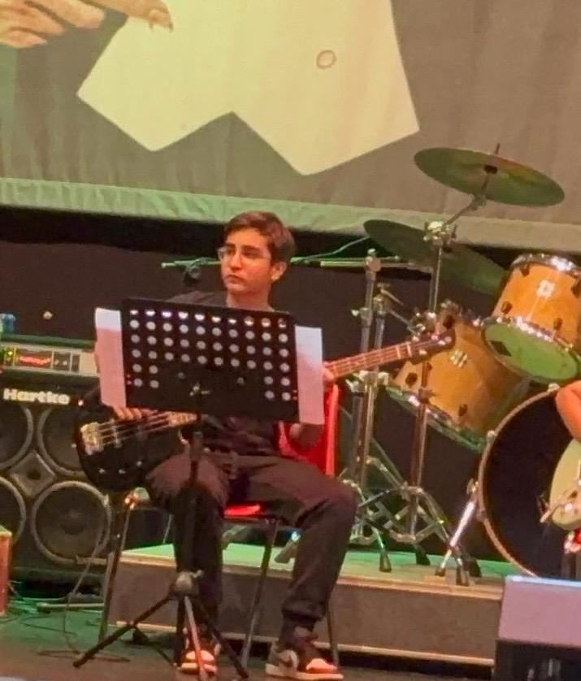
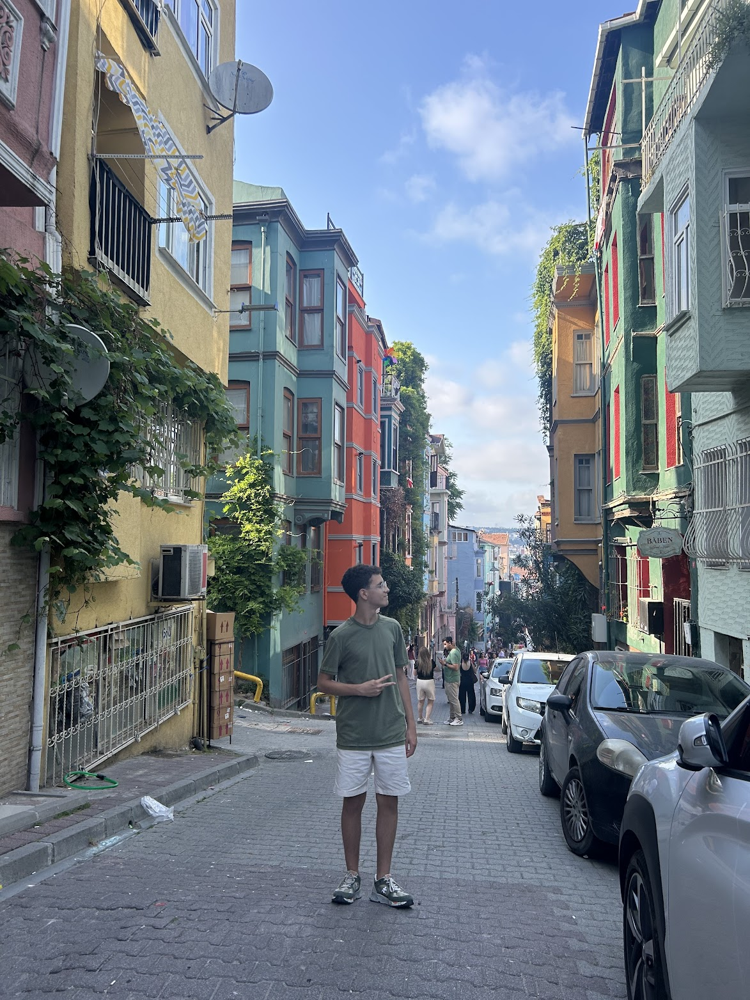

YOUR RESOURCE HUB FOR WSC
📸 Follow us on Instagram: @istanbul_spitting_alpacas
📧 Contact us: keremtuzun17@gmail.com guneyk2029@stu.koc.k12.tr berena2029@stu.koc.k12.tr

 
.jpeg)
Our Objective
Officially preparing students with notes, quizzes, and guidance for the 2025 WSC season.
Istanbul Spitting Alpacas is a youth-led organization committed to helping students prepare for the World Scholar's Cup with passion and purpose.
We offer curated study materials, debate strategies, and fun community-driven content to make your WSC journey both effective and memorable.
Whether you're burning the midnight oil or chasing alpaca-themed glory, we’ve got your back.
Our Achievements
KAG (Kerem,Arda,Güney)
Stockholm Globals:
Medals: 50
Trophy: 3/
Ranking: 8/
Bucharest Regionals:
Medals: 30/
Ranking: 12/
Yale ToC 2024:
Medals: 24/
Ranking: 30/
Istanbul Regionals:
Medals: 27/
Ranking: 1/
Trophy: 7
Kuala Lumpur Globals:
Medals: 32/
European, West Middle Eastern Champion/
Ranking: 34/
BIG (Beren, İpek, Güney)
ToC 2025 awaits them - Good Luck !
Bio
Meet Kerem Tüzün
Hi, I’m Kerem. I’m someone who enjoys diving into different things — especially books, coding, WSC, and tennis. I’ve always loved reading because it lets me explore new ideas and stories, whether it’s fiction, history, or something random I find interesting. I’ve been part of the World Scholar’s Cup for 2 years now, and it’s honestly one of the most fun and challenging things I’ve done. The mix of debating, writing, and learning unusual topics makes it really different from regular school competitions — in a good way. Outside of that, I spend a lot of time programming. I enjoy building websites and making projects that actually do something useful, especially when I get to combine design and logic. I like figuring things out through trial and error — whether it's debugging code or learning a new framework. And then there’s tennis, which helps me reset. It’s a sport I genuinely enjoy because it's both physical and mental, and I always leave the court feeling better, even if I lose a match.
Meet Güney Keskinoğlu
Hi I am Güney Keskinoğlu, no I am not one of those who enjoy the debates or the bowl, Im more of a challenge or writing guy. I also love table tennis, music and Kendrick Lamar. The G.O.A.T for real. I also lets say like the World Scholars Cup, tho if we put out the pain while trying to understand what a literature type has to do with scholars, it would change to love. Like my friends I won't say that I am a scholar for 2 years, I would like to say that I am trying to be a scholar since May 2024. Besides the ball at the globals and ToC, and blasting full on FE!N while jumping my soul off at a small hall, I would not say that the Scholars program exciting, I do enjoy the debates in one condition, if the opponent did not learn any English before the debate. The challenge tho i enjoy, if the question was not pulled out of the MUN curriculum of course. Although I "just" like those Im here, so lets enjoy our studying and scream till we die in the ball for a mere one and a half hours baby! Carpe Diem, Güney out
Meet Beren Ayorak
Hi, I'm Beren Ayorak. I mostly enjoy doing imaginative things, whether it's ballet I've been doing for 8 years, dancing, playing the piano, listening to tons of music and also singing. These are the things I am passionate about in life, what brings me comfort and happiness. And for a while now I'm interested in WSC. I joined during March 2025, I can probably say I'm newly involved. The World Scholars Cup is totally challenging and from time to time overwhelming for me. However, I've embraced myself with the difficulties of the challenge, astounding parts of studying for the curriculum, and the chaos of the debates. The writing I'm more calm with. I prefer being with only me and my mind rather than the utter chaos in debate. Yet, I'm someone who can talk a lot. Ironically it makes my debates quite easier. Even so, WSC made learning about different topics interesting and fun, it also made me thrilled to connect with other cultures. On the other hand, I'm really excited to be here at Istanbul Spitting Alpacas. I'm eager to see what is yet to come.
Past Contributor: Arda Sabri Tiryaki
I’m Arda Sabri Tiryaki, a 14-year-old student at Koç High School, a licensed swimmer, and someone who loves movies, books, traveling, and drawing cartoons. I’ve been part of the World Scholar’s Cup for two years now — and honestly, I’ve never had this much fun while learning. The topics are always so unique, innovative, and full of surprises — from debating abstract ideas to exploring global issues with people from all around the world. It’s not just about facts, it’s about thinking, connecting, and having a great time doing it (yes, alpacas included!). WSC has made me love learning in a way I never expected, and I can’t wait for what’s next.
📸More of us on Instagram: @istanbul_spitting_alpacas
Progress - This visit
Notes
The most expensive highway project in the United States, plagued by cost overruns, delays, leaks, design flaws, accusations of poor execution and use of substandard materials, criminal charges and arrests, and the death of one motorist.
Originally scheduled to be completed in 1998 at an estimated cost of $2.8 billion (US$7.4 billion adjusted for inflation as of 2020). However, the project was completed in December 2007 at a cost of over $8.08 billion (in 1982 dollars, $21.5 billion adjusted for inflation), a cost overrun of about 190%.
As a result of a death, leaks, and other design flaws, the Parsons Brinckerhoff and Bechtel consortium agreed to pay $407 million in restitution and several smaller companies agreed to pay a combined sum of approximately $51 million.
The political, financial and residential obstacles were magnified when several environmental and engineering obstacles occurred. The downtown area through which the tunnels were to be dug was largely landfill, and included existing Red Line and Blue Line subway tunnels as well as innumerable pipes and utility lines that would have to be replaced or moved. Tunnel workers encountered many unexpected geological and archaeological barriers, ranging from glacial debris to foundations of buried houses and a number of sunken ships lying within the reclaimed land.
A 50.46 km (31.35-mile) undersea railway tunnel, opened in 1994, that connects Folkestone (Kent, England) with Coquelles (Pas-de-Calais, France) beneath the English Channel at the Strait of Dover. It is the only fixed link between the island of Great Britain and the European mainland.
There have been three fires in the tunnel, all on the heavy goods vehicle (HGV) shuttles, that were significant enough to close the tunnel, as well as other minor incidents. On the night of 19/20 February 1996, about 1,000 passengers became trapped in the Channel Tunnel when Eurostar trains from London broke down owing to failures of electronic circuits caused by snow and ice being deposited and then melting on the circuit boards.
Phase 1 of the planned route, about 494 miles (795 km) long, runs from the Salesforce Transit Center in San Francisco to the Anaheim Regional Transportation Intermodal Center in Anaheim, with intermediate stops planned for Millbrae, San Jose, Gilroy, Merced, Madera, Fresno, Kings/Tulare (Hanford), Bakersfield, Palmdale, Burbank and Los Angeles. An additional station between Los Angeles and Anaheim, at Norwalk or Fullerton, is being considered.
Phase 2 would construct two major extensions to the system. The northern extension would stretch 115 miles (185 km) from Merced to Sacramento, with intermediate stops at Modesto and Stockton. It would largely parallel the existing San Joaquins route through the Central Valley. In the south, the system would be extended 167 miles (269 km) from Los Angeles to San Diego. Instead of continuing south from Anaheim, it would split off from the Phase 1 route at Los Angeles Union Station and travel east along I-10 before turning south, following an inland route along I-15 or I-215. This would enable high-speed trains to serve the Inland Empire and inland parts of San Diego County, with stops at Ontario International Airport and Escondido.
Founded in 2007 as the new planned capital of South Korea from many parts of the South Chungcheong Province and some parts of North Chungcheong Province to ease congestion in South Korea's current capital and largest city, Seoul, and encourage investment in the country's central region. Since 2012, the government of South Korea has relocated numerous ministries and agencies to Sejong, but many still reside in other cities, primarily Seoul, where the National Assembly and many important government bodies remain.
This underdeveloped area was hit hard by the 2004 Indian Ocean tsunami and is undergoing a number of major development projects including the construction of a new sea port and international airport finished in 2013. These projects and others such as Hambantota Cricket Stadium are said to form part of the government's plan to transform Hambantota into the second major urban hub of Sri Lanka, away from Colombo.
A cement grinding and bagging factory is being set up, as well as fertiliser bagging plants. Large salt plains are a prominent feature of Hambantota. The town is a major producer of salt. A Special Economic Zone of 6,100 hectares (15,000 acres) has been proposed by Prime Minister Ranil Wickremesinghe, out of which approximately 500 hectares (1,235 acres) will be situated in Hambantota to build factories, LNG plants and refineries while the rest will be in Monaragala, Embilipitiya and Matara. A Vocational training Center was opened in 2017 by Prime minister Ranil Wickremesinghe with China to train the workforce needed for the SEZs. Wickramasinghe also came into an agreement with state-owned China Merchants Port Holdings to lease 70 per cent stake of the strategically-located Hambantota port at $1.12 billion, opening Hambantota to the Belt and Road Initiative.
A conceptual linear smart city in Saudi Arabia in Neom, Tabuk Province, housed in a single building, that is designed to have no cars, streets or carbon emissions. The original plans called for the city to span 170 kilometres (110 mi) at a height of 500 m (1,600 ft) and a width of 200 metres (660 ft) sized to accommodate a population of 9 million (25% of Saudi Arabia's 2022 population of 35.5 million). The Line would have an entirely glass mirror exterior. The plan calls for all basic services to be within a five-minute walking distance.
The Line is eventually planned to be 170 kilometres (110 miles) long. It could stretch from the Red Sea approximately to the city of Tabuk and could have nine million residents, resulting in an average population density of 260,000 per square kilometre (670,000/sq mi). By comparison, Manila, the world's most densely populated city in 2020, had a density of 44,000 per square kilometre (110,000/sq mi). The Line's design consists of two mirrored buildings with an outdoor space in between, having a total width of 200 metres (660 ft) and a height of 500 metres (1,600 ft). This would make it the third tallest building in the country after the Abraj Al-Bait Clock Tower and the Jeddah Tower, and approximately the 12th tallest building in the world.
The plan is for the city to be powered entirely by renewable energy. It will consist of three layers, one on the surface for pedestrians, one underground for infrastructure, and another underground for transportation. Artificial intelligence will monitor the city and use predictive and data models to find ways to improve daily life for its citizens, with residents being paid for submitting data to The Line.
It is claimed by the Saudi government that it will create 460,000 jobs, spur economic diversification, and contribute 180 billion SAR (US$48 billion) to domestic GDP by 2030. According to Crown Prince Mohammed bin Salman in 2022, the first phase project is expected to cost SAR 1.2 trillion (US$320 billion), and the Saudi sovereign wealth fund Public Investment Fund (PIF) would provide half of the sum.
On 5 April 2024, Bloomberg News reported that the project had been scaled back as a result of restrictions over funding by the PIF. Bloomberg cited Saudi officials as expecting a 2030 completion of a 2.4 kilometres (1.5 mi) section of the city which would contain fewer than 300,000 residents, down from an expected 1.5 million.
The stated plan was for $100 billion, with $30 billion coming from foreign investors and another $30 billion from apartment sales, the city aiming to house 1 million residents in a development with 150 schools, 50 hospitals and daycare centers, numerous parks, shopping malls, cultural centers and a university campus plus a Formula 1 quality racetrack around a centrepiece $2 billion Azerbaijan Tower (planned to have been the tallest in the world). The city was expected to be equipped with 150 bridges and a large municipal airport to connect the islands to the mainland. It is expected that, in general, the city, when completed in 2022-2023, will host 1 million residents. According to the project, the price of completely renovated apartments will be around $4000-$5000 per square meter.
All of these facilities were to be able to withstand up to magnitude 9.0 earthquakes. The president of the controlling Avesta Group of Companies, Ibrahim Ibrahimov, reportedly had the original idea in a flash while flying between Baku and Dubai. He told reporters that American, Turkish, Arab, and Chinese investors had showed interest in the project, which he described as being like a "new Venice".
A hydroelectric gravity dam that spans the Yangtze River near Sandouping in Yiling District, Yichang, Hubei province, central China, downstream of the Three Gorges. The world's largest power station by installed capacity (22,500 MW), the Three Gorges Dam generates 95±20 TWh of electricity per year on average, depending on the amount of precipitation in the river basin. After the extensive monsoon rainfalls of 2020, the dam's produced nearly 112 TWh in a year, breaking the previous world record of ~103 TWh set by Itaipu Dam in 2016.
At current levels, 80% of the land in the area is eroding, depositing about 40 million tons of sediment into the Yangtze annually and according to the National Development and Reform Commission, 366 grams of coal would produce 1 kWh of electricity during 2006. From 2003 to 2007, power production equaled that of 84 million tonnes of standard coal.
A 55-kilometre (34 mi) bridge-tunnel system consisting of a series of three cable-stayed bridges, an undersea tunnel, and four artificial islands. It is both the longest sea crossing and the longest open-sea fixed link in the world. The HZMB spans the Lingding and Jiuzhou channels, connecting Hong Kong, Macau with Zhuhai—a major city on the Pearl River Delta in China.
Problems:
Worker deaths and injuries: The number of deaths and injuries during the construction project came under scrutiny in Hong Kong. In addition to nine fatalities on the mainland side, more than ten deaths were reported on the Hong Kong side of the construction project, plus between 234 and 600 injuries, depending on the source. In April 2017, the Construction Site Workers General Union, the Labour Party and the Confederation of Trade Unions demonstrated at the Central Government Complex, demanding the government take action.
Faked safety testing: In 2017, Hong Kong's Independent Commission Against Corruption (ICAC) arrested 21 employees (2 senior executives, 14 laboratory technicians, and 5 laboratory assistants) of Jacobs China Limited, a contractor of the Civil Engineering and Development Department for falsifying concrete test results, thus potentially risking the safety of the bridge for public use. In December 2017, a lab technician pleaded guilty and was sentenced to imprisonment for eight months, while the others await sentencing. Hong Kong's Highways Department conducted tests again after the falsified results were exposed and found all test results met safety standards.
Impact on wildlife: Conservationists at WWF Hong Kong blamed the construction of the HZMB for the falling number of white dolphins in the waters near the bridge. The dolphins found near waters of Lantau were the worst hit with numbers dropping by 60 percent between April 2015 and March 2016.
Sometimes called the New Silk Road is the rail transport route for moving freight and passengers overland between Pacific seaports to Europe. The Eurasian Land Bridge starts from west China to Moscow whereas The New Eurasian Land Bridge extends from east of China to the center of Europe if it sticks to the plan. Also managers are planning to make the bridge go around Russia due to the ongoing war.
The World Health Organization (WHO) has declared loneliness to be a pressing global health threat, with the US surgeon general saying that its mortality effects are equivalent to smoking 15 cigarettes a day. But it also blights the lives of young people. Between 5% and 15% of adolescents are lonely, according to figures that are likely to be underestimated. In Africa, 12.7% adolescents experience loneliness compared to 5.3% in Europe.
Past studies in the industrialized world have suggested loneliness is on the rise, but without historical data on the issue, it's hard to say how present-day numbers compare over time or across geographical regions. "It's a commonly held belief that around 1 in 12 people experience loneliness at a level that can lead to serious health problems, however, the source of such data are unclear and researchers have never established how widespread loneliness is on a global scale," says epidemiologist Melody Ding from the University of Sydney. Ding and her colleagues have therefore pulled together 57 observational studies on loneliness from 113 countries or territories between 2000 and 2019. The authors hope to use the findings as a pre-pandemic baseline to monitor feelings of lonesomeness going forward. Because loneliness is associated with mental, emotional, and physical well-being, the findings could help reveal emerging issues in public health that must be better addressed. Global loneliness estimates were mostly available for adolescents, and findings among 77 nations suggest the issue can range from 9.2 percent in South-East Asia to 14.4 percent in the Eastern Mediterranean region.
In Japan, robots are often assumed to be a natural solution to the "problem" of elder care. The country has extensive expertise in industrial robotics and led the world for decades in humanoid-robot research. At the same time, many Japanese people seem—on the surface, at least—to welcome the idea of interacting with robots in everyday life.
In Japan, many workers face punishing hours, fueling the phenomenon of karōshi, or death by overwork. At the less extreme end of the spectrum, grueling work schedules leave people with little time to find partners and have children. This causes loneliness. For instance, Sony's Aibo robot dogs, for example, re-launched by maker Sony after being retired in 2006, inspire such an emotional bond with their owners that some hold funerals when the robotic pets stop working. Tech giant Softbank Robotics produces the Pepper robot, a humanoid designed to provide companionship, which some have taken to integrating into their family as substitute children or grandchildren. At Silver Wing care facility, Pepper is in charge of the midday exercise session.
The term "Meta Crisis" refers to the interconnected, complex crises that overlap and amplify one another. The intersection of finance, technology, and climate presents a multifaceted challenge that reshapes the global economy in several ways:
Economic Disparities: The financialisation of economies has led to growing wealth inequality. Investment in high-yield assets often benefits those already wealthy, while low-income households face financial precarity.
Debt Levels: High levels of personal and national debt create vulnerabilities. Economic downturns or shifts in policy can exacerbate these vulnerabilities, leading to broader financial instability.
Automation and Job Displacement: Technologically disruptive advances in artificial intelligence and automation are transforming labour markets. While technology can increase productivity, it also risks displacing workers, particularly in low-skilled sectors.
Digital Divide: Access to technology varies widely, impacting economic opportunities. Those without adequate digital infrastructure or skills face exclusion from emerging economic benefits.
Environmental Costs: Climate change has very tangible economic impacts, from damage to infrastructure due to extreme weather events to increased insurance costs and resource scarcity.
Transition Costs: Shifting to sustainable practices and renewable energy requires significant investment. While necessary for long-term sustainability, these transitions can impose short-term economic burdens on businesses and consumers.
To stop their population implosions, countries are turning to immigration, stimulating birth rates and strengthening social services. None of them might be enough – and the long-term fix might be a radical one.
Many people habitually check their phones for information, even during meals, which reflects our constant access to news and answers. While this can be useful, the flood of often negative or violent content can harm mental health, leading to stress and anxiety. The core question is whether governments or others should limit how much information people can access to protect their well-being.
Peeking into Tomorrow: The Enduring Human Quest to Know the Unknown
The desire to know the future is a fundamental part of the human condition. It stems from a deep-seated need to reduce anxiety, exert control over our environment, and prepare for both opportunity and danger. This drive to lift the veil on what's to come connects ancient shamans to modern data scientists, all seeking answers to the same timeless question: What happens next?
The Psychological Imperative: Why We Need to Know
Our brains are prediction engines. This cognitive wiring, essential for survival, creates an inherent discomfort with uncertainty. Knowing the future—or believing we can—provides a crucial sense of agency in a chaotic world. This explains the enduring appeal of figures like Nostradamus, whose vague, poetic quatrains, written in the 16th century, remain endlessly reinterpreted to seemingly fit modern events. His longevity isn't proof of his accuracy, but rather a testament to our powerful confirmation bias—our tendency to remember the "hits" and forget the "misses"—and our profound need to believe that patterns exist and can be decoded.
Two Paths to Prophecy: The Magical and the Methodical
Humanity's methods for divining the future fall into two broad categories: the esoteric and the empirical.
1. Esoteric & Spiritual Traditions
These methods are based on the belief that hidden forces or spiritual insights can reveal fate.
- Divination: The general practice of seeking knowledge of the future through supernatural means.
- Astrology: Interpreting the influence of celestial bodies on human affairs.
- Necromancy: Communicating with the dead to gain hidden knowledge.
- Oneiromancy: The interpretation of dreams as prophetic visions.
- Cartomancy / Tarot: Using decks of cards to gain insight into past, present, and future events.
- Clairvoyance & Scrying: Using tools like crystal balls, water (hydromancy), or wax (ceromancy) to perceive visions.
- Ancient Systems: Established traditions like the I Ching (China), Ifá (West Africa), and Jyotish (Vedic astrology).
2. Observational & Scientific Methods
These approaches rely on pattern recognition, mathematics, and the systematic study of natural phenomena.
- Calendrical Systems: The Aztec and Chinese agricultural calendars used astronomical observation to predict seasons for planting and harvest, a form of pragmatic futurism essential for survival.
- Astronomical Prediction: Ancient mechanisms like the Antikythera mechanism (c. 2nd century BCE) calculated celestial events and eclipses with stunning mechanical precision.
- Modern Meteorology: The scientific prediction of weather using physics, data models, and satellite technology.
- Chaos Theory & Complex Systems: The study of how small changes in initial conditions can lead to vastly different outcomes (the Butterfly Effect). This field explores concepts like:
- Emergence: How complex systems arise from simple interactions.
- Fractals: Patterns that repeat at different scales.
- The Three-Body Problem: A classic example of a chaotic system that is inherently difficult to predict long-term.
- Theoretical Forecasting: Scientists like Michio Kaku extrapolate future technological and societal trends based on current scientific understanding.
Artistic Interpretations: Fortune-Telling in Culture
Artists have long been fascinated by the figure of the seer, using it to explore themes of fate, deception, and desire.
Visual Art
- Caravaggio, The Fortune Teller (c. 1595): A masterful depiction of deception, where a young man is having his palm read while his ring is stolen.
- Georges de La Tour, The Fortune Teller (c. 1630): A darker, more theatrical scene of a group conspiring to rob a young nobleman.
- Other notable works by Michael Vrubel, Julio Romero de Torres, and Helena Schjerfbeck explore the mystique and psychological tension of the prophetic encounter.
Music & Opera
- Bizet's Carmen ("Card Trio"): Carmen reads her fate in the cards, which ominously predict her death.
- Orff's Carmina Burana ("O Fortuna"): A powerful chorus lamenting the cruel and unpredictable wheel of fortune.
- Popular Music: Songs like Benny Spellman's "Fortune Teller" and Al Stewart's "Nostradamus" continue this thematic tradition.
Literature & Poetry
- Horace's "Ode I.11": Source of the phrase "Carpe Diem" (Seize the Day), arguing against seeking the future in favor of living in the present.
- W.B. Yeats's "The Second Coming": A terrifying poetic vision of a chaotic future and a coming apocalyptic era.
- Emily Dickinson's "The Future—never spoke": Meditates on the silent, inscrutable nature of what is to come.
Cognitive Biases: Why We Believe
Psychology reveals why pseudoscientific predictions often feel convincing.
- The Barnum Effect: The tendency to believe vague, general personality descriptions are highly accurate for oneself (the basis of horoscopes).
- Confirmation Bias: Remembering successful predictions and ignoring failed ones.
- Self-Fulfilling Prophecy: When a belief or prediction, even if false, influences behavior in a way that causes it to become true.
Modern Forecasting: Data, AI, and Cycles
Today, prediction is increasingly the domain of algorithms and data analysis.
- Artificial Intelligence (AI): Machine learning models predict everything from consumer behavior to weather patterns by identifying complex correlations in vast datasets.
- Popular & Economic Cycles: Observable, though often imperfect, patterns in culture and commerce.
- Moore's Law: The observation that computing power doubles approximately every two years.
- Fashion & Nostalgia Cycles: The 20-30 year recurrence of trends.
- Business & Market Cycles: Periods of economic expansion and contraction.
The Philosophical Divide: Free Will vs. Determinism
Underpinning the entire pursuit of prediction is a fundamental philosophical question: Is the future open (Free Will), or is it already set (Determinism)? Writers like Ted Chiang (e.g., "Story of Your Life") excel at exploring the profound and often painful implications of knowing what is to come.
Conclusion
From reading animal entrails to training neural networks, humanity's quest to know the future is a story of our evolution. It reflects our deepest fears, our highest hopes, and our unyielding drive to find order in chaos. While our methods have changed from the mystical to the mathematical, the core desire remains unchanged: to turn the uncertainty of tomorrow into the understanding of today.
🚀 Futuristic Technologies That Never Took Off
Across the 20th century and into the early 2000s, there was an unshakable belief that technology would unlock utopia. Yet many celebrated innovations failed to cross from imagination to implementation. Rocket mail promised supersonic deliveries but was shelved due to safety risks and cost. Flying cars captured public fascination, but technical complexity, air traffic control issues, and noise pollution made them largely impractical. Ground-effect vehicles, designed to skim above surfaces using aerodynamic lift, never found safe or commercial applications.
Zeppelins once ruled the skies, but the Hindenburg disaster ended that dream. Suspension railways were space-efficient but expensive and visually intrusive. The Maglev, despite its speed and quiet, is hampered by high costs and lack of political will. Supersonic transport like the Concorde was fast but noisy, fuel-hungry, and elitist. The Hyperloop, championed by Elon Musk, has yet to prove viable at scale, and hydrogen vehicles remain stalled by distribution limitations.
Military concepts like nuclear propulsion were feared and never scaled to public transport. Meanwhile, mechas exist mostly in anime and concept shows, far from battlefield or industrial use. The metaverse, once hailed as a second internet, has been criticized for clunky interaction, lack of purpose, and an overdependence on hype. These technologies weren't failures in vision—but in timing, economics, and readiness.
🎶 1990s Optimism: A Musical Mirror of the Zeitgeist
Following the Cold War, the 1990s were filled with political optimism and faith in global harmony. Artists channeled this mood into anthems that weren't just popular, but deeply hopeful.
🎵 Scorpions – "Wind of Change" (1990): Released after the fall of the Berlin Wall, this power ballad became an unofficial anthem of Eastern Europe's liberation. With whistled melodies and lyrics referencing Moscow and Gorky Park, it reflected a longing for unity and peace—something that felt tangible in that historical moment.
🎵 Jesus Jones – "Right Here, Right Now" (1991): This British alt-rock track captured the sense of global transformation. With lyrics like "Watching the world wake up from history," it mirrored real-time revolutions and democracy's spread. The song was hopeful yet grounded, a timestamp for a generation witnessing change.
🎵 Michael Jackson – "Heal the World" (1991): A gospel-infused plea for compassion, the song spoke to Jackson's humanitarian side. It called on children and adults to imagine a better world—a recurring theme in 90s global pop culture. Its release coincided with a rise in global activism, from Live Aid to Earth Day revival.
🎵 Michael Crawford – "Counting Up to Twenty" (1995): While lesser known, this track from the educational series Between the Lions evokes wonder and imagination. It uses counting not just as a child's learning tool but as a metaphor for humanity building up to something profound—reaching beyond limitation toward creativity.
🎵 Will Smith – "Will 2K" (1999): This millennium party anthem was a celebration of the future. Referencing fears of the Y2K bug and embracing digital-age swagger, the song wrapped pop optimism in humor and charm. It imagined a future where technology and joy could coexist—without irony.
Together, these tracks illustrate how deeply music reflected 1990s hope. They weren't naive—they were aspirational. Even today, they stand as sonic memorials to a time when people dared to believe the future would be brighter.
🌌 New Age: Healing the Spirit in a Digital World
While tech-driven futurism dominated headlines, the New Age movement offered a quieter revolution: one of the spirit. Drawing from Eastern philosophy, meditation, nature worship, and cosmic themes, New Age music encouraged transcendence over consumption.
🎶 Alice Coltrane – "Journey In Satchidananda" (1971): A masterpiece of spiritual jazz, this work draws on Hindu philosophy and features hypnotic harp and saxophone. Coltrane's music reflected personal transformation and devotion, offering listeners access to altered states of awareness.
🎶 Vangelis – "To the Unknown Man" (1977): An electronic tribute to the mystery of existence, this track combined analog synths and cinematic progression. Its vast, spacey tones encouraged introspection and awe—ideas central to New Age culture.
🎶 Kitaro – "Theme from Silk Road" (1980): This track accompanied a documentary about the ancient trade route, fusing East Asian instruments with ambient tones. It symbolized a spiritual journey across geography and time.
🎶 Enya – "Caribbean Blue" (1991): Dreamlike and serene, this track wove Celtic harmony with layered vocals. It envisioned a peaceful otherworld, both ancient and futuristic, where time dissolved and only beauty remained.
🎶 Enigma – "Return to Innocence" (1994): A global hit that blended Gregorian chant, electronic beats, and philosophical themes. It questioned modernity and invited a return to primal emotional honesty—what New Age thinkers might call spiritual purity.
These songs didn't just entertain—they soothed and re-centered. In a world now overwhelmed by algorithmic noise, their messages of simplicity, inner peace, and universal connection feel more relevant than ever.
🌀 Conclusion: Dreams Deferred, Not Denied
Whether through technology, music, or mysticism, humanity has always looked to the future with hope. Not all dreams came true—but they weren't wasted. They revealed what we longed for: connection, freedom, transcendence. As crises challenge today's world, we may find ourselves revisiting these visions—not for nostalgia, but as blueprints for what could still be.
Filofei (16th century Russian monk): Proposed the idea that Russia is the “Third Rome,” following the decline of Rome (First Rome) and Constantinople (Second Rome).
This meant Russia saw itself as the rightful spiritual and political successor, inheriting the mantle of Orthodox Christianity and imperial destiny.
Implied Russia had a special role in preserving true Christian faith and authority in the world.
Unipolarity vs. Multipolarity: Unipolarity: A single dominant global power (e.g., U.S. post-Cold War). Multipolarity: Several influential powers coexist (e.g., current rising China, EU, Russia, India).
Core vs. Periphery: Core powers hold economic, military, and political dominance. Periphery regions are less powerful, often dependent or influenced by cores.
Great vs. Small Powers: Great powers influence global affairs (e.g., U.S., China, Russia). Small powers have limited influence and often align with great powers.
Controlling vs. Client States: Controlling states exercise direct or indirect dominance. Client states maintain some autonomy but are politically/economically dependent.
Soft vs. Hard Power: Hard power: Military and economic coercion. Soft power: Cultural influence, diplomacy, values.
Foreign Assistance: Aid can build alliances or exert influence.
Modern Discussion Points: Could there be a new "Rome" today? Would it be unipolar or multipolar? What would such an empire’s core and periphery look like? Would Greenland or other territories be part of it strategically or symbolically? Would a new empire be stabilizing or destabilizing globally?
2. The History of Empires’ Second ChancesNeo-Assyrian Empire: Attempted resurgence in the early 1st millennium BCE; short-lived, tried to reassert Mesopotamian dominance.
Song Dynasty (China): Tried to restore Chinese cultural and political order after earlier fragmentation.
Byzantine Empire: Continuation of the Eastern Roman Empire; long-lived but struggled against Ottoman rise.
Carolingian Empire: Charlemagne’s empire aimed to revive Western Roman imperial authority.
Ottonian dynasty: Attempted to restore Holy Roman Empire ideals.
Meiji Restoration (Japan): Revived Japan by combining traditional imperial rule with modernization.
Neo-Sovietism: Contemporary nostalgia and attempts to reassert Russia’s post-Soviet influence reminiscent of USSR.
Success and Failure: Most revivals fell short of original empires’ scale or influence. Some regimes lasted longer than the originals, but often in changed forms. Attempting to emulate past empires can lead to nationalism, modernization, or cultural renaissance — or to conflict and decline.
3. Reconstruction of Destroyed Buildings: Continuation or New?Bibliotheca Alexandrina: Modern reconstruction inspired by ancient Library of Alexandria; symbolic but new.
White House: Has been rebuilt and renovated several times after damage; remains continuous as U.S. seat.
Notre Dame: Undergoing reconstruction after 2019 fire; debate on authenticity.
Basilica of Saint Paul: Rebuilt multiple times; retains religious significance.
Babylon: Archaeological ruins and partial reconstructions.
Shuri Castle: Destroyed in WWII, rebuilt multiple times; symbolic Okinawan heritage.
Yellow Crane Tower: Rebuilt numerous times, maintaining cultural identity.
Stonehenge: Ancient, not rebuilt but preserved.
Shakespeare’s Globe: Modern reconstruction of original theatre; blends history and modern theater culture.
Discussion Points: Is reconstruction preserving heritage or creating a new artifact? What defines authenticity in rebuilding? Can the rebuilt structure hold the same cultural and historical meaning?
4. Isaac Asimov’s Foundation Series and the Role of Knowledge Keepers in Civilization’s RestartPremise: Galactic Empire collapsing leads to thousands of years of chaos. A mathematician uses psychohistory (predictive math) to plan a shorter dark age. The plan involves a secluded colony of librarians creating a grand encyclopedia to preserve knowledge.
Discussion Points: Would librarians be the best choice to restart a civilization? Pros: preservation, knowledge management. Cons: lack of practical power or innovation focus? If not librarians, then who? Scientists? Technocrats? Politicians? Educators? How much should math and big data be trusted to predict the future? Can data-driven forecasts guide policy in complex sociopolitical systems?
5. De-Extinction of Brands and Companies: Honesty and ValueExamples of Revived Brands: Pan Am: Airline brand resurrected by private firm for luxury charter flights. Pan Am (fashion): Brand used for clothing line in South Korea. RCA, Westinghouse, Polaroid, RadioShack, Gateway, Nokia, Sansui, Eastern Air Lines: Brands revived or repurposed in new industries or markets.
Discussion Points: Is reviving a brand without original connections dishonest or clever marketing? Does the revived brand’s legacy help or harm consumer trust? Which defunct brands would you want to see revived, and in what form? Could nostalgia and brand recognition be exploited or respected?
6. Revival of Vintage Technologies: Nostalgia vs. PracticalityExamples: Disposable cameras, handheld gaming devices, vinyl records, film photography. Shortwave radio, AM radio, pagers, magnetic tape storage, physical media. 3.5-inch floppy disks as novelty or collectible items.
Why Do Some Products Come Back? Nostalgia for tactile or analog experience. Aesthetic or cultural appeal. Simplicity or unique limitations that foster creativity. Reaction against digital saturation.
Discussion Points: When do older, less capable technologies feel preferable to newer ones? Is the resurgence driven by community, culture, or genuine utility? What might future "vintage" technologies be?
7. Artistic and Musical De-Extinction: Old Music Killing New Music?Considerations: Revival of classical, vinyl-era, and retro styles in music. Sampling and remixing old music as foundation for new genres. Commercial dominance of nostalgic or legacy artists vs. new talent. Whether audiences’ preferences for old styles limit innovation.
Discussion Points: Is old music overshadowing or inspiring new music? Does recycling old art inhibit creativity or preserve culture? How do streaming algorithms and media influence these trends?
SummaryThis comprehensive note explores a spectrum of themes from imperial legacy and geopolitical theory to cultural reconstruction, knowledge preservation, brand resurrection, technology nostalgia, and artistic cycles. Each topic invites deep consideration of history’s role in shaping present and future dynamics, and the tensions between continuity and innovation.
Oxidation: A chemical reaction where a substance loses electrons, often involving oxygen. Part of redox reactions (Oxidation Is Loss, Reduction Is Gain — OIL RIG). Central to biology, industry, and combustion, releasing energy.
Combustion: A high-temperature exothermic redox reaction between fuel and an oxidizer. Produces heat, light, and gases, sometimes a flame. Needs activation energy but can become self-sustaining. Basis of engines, heating, and fire behavior.
Flash Point: Lowest temperature where a liquid emits enough vapor to ignite with air. Below 37.8°C = flammable, above = combustible. Critical for fire hazard and safe handling.
Convection: Heat transfer through moving fluids like air or water. Warm fluid rises, cool fluid sinks, creating circulation. Drives weather, ocean currents, and spreads fires by moving heat to new areas.
Fire Triangle: Heat, fuel, and oxygen — all must be present. Removing one stops the fire. Basic model for safety and firefighting.
Fire Tetrahedron: Adds chemical chain reaction to the fire triangle. Once started, the reaction sustains fire. Removing any element — including interrupting the chain reaction (e.g., halon) — stops burning. Explains why some fires resist water.
Flame: The visible, hot part of fire. Plasma formed where heat, fuel, and oxygen combine. Behavior depends on fuel-air ratios, conduction, and diffusion.
Fuel: Any material that releases energy chemically, physically, or even nuclear. Traditionally wood or oil, now includes modern fuels for transport, cooking, heating, and electricity.
History of FireEarly Control: Likely mastered by Homo erectus 1–2 million years ago (Wonderwerk Cave, South Africa). Allowed cooking, which changed human evolution (bigger brains, better survival).
Fire-Starting: From flint and steel to modern lighters and ignition systems. Also by friction, sunlight, or chemicals. Survivalists like John Plant demonstrate techniques for emergencies and camping.
The Apprentice: Reality TV show (2004–2017), hosted by Donald Trump. Known for “You’re fired.” Cultural link between fire and business competition.
Lighters: Portable flame devices. Early ones converted pistols. Ferrocerium made Zippos and modern types possible — gas, mechanical, or electric. Used for cigarettes, candles, and fires.
Fire in MusicHaydn’s Symphony No. 59 ("Fire Symphony"): in A major, known as the Fire Symphony, was composed in the late 1760s for Nikolaus Esterházy. This work features four movements and utilizes two oboes, two French horns, continuo, and strings. It is famously linked to the play Die Feuersbrunst and is characterized by its lively first movement, Presto, which gives the impression of fire through energetic violin melodies.
Wagner’s Die Walküre: Richard Wagner, a renowned German composer, created an influential cycle of operas called Der Ring des Nibelungen. A key moment occurs in Die Walküre, where Wotan grapples with his duty as a father and the fate of his daughter Brünnhilde. After an emotional conflict, he puts her in a magical sleep protected by fire, allowing only the bravest heroes to reach her.
Sibelius’s The Origin of Fire: Jean Sibelius's The Origin of Fire, a cantata for baritone, male choir, and orchestra, premiered in 1902. Based on Finland's national epic, the Kalevala, it reflects the country's patriotic spirit.
Stravinsky’s Firebird: Igor Stravinsky composed The Firebird for the Ballet Russes, blending human and supernatural themes in his music. This ballet tells a magical story of adventure involving the Firebird and an evil sorcerer.
Prokofiev’s Winter Bonfire: Sergei Prokofiev's Winter Bonfire, written for orchestra, choir, and narrator, depicts a winter outing by children in Moscow, showcasing his talent in orchestration.
Jerry Lee Lewis, "Great Balls of Fire" (1957): Jerry Lee Lewis's "Great Balls of Fire" (1957) expresses excitement and passion in love, highlighting how intense emotions can feel thrilling yet overwhelming. The lyrics describe a man's transformation from disbelief in love to acknowledging its power, as he joyfully shares his feelings for someone special.
Johnny Cash, "Ring of Fire" (1963): Johnny Cash's "Ring of Fire" (1963) describes love as a consuming force, comparing it to a fiery ring. Written by June Carter and Merle Kilgore, the song portrays the intense emotions that come with love, suggesting that falling in love can feel like descending into flames.
Vangelis, "Chariots of Fire" (1981): Vangelis's "Chariots of Fire" (1981) is an instrumental piece for the film of the same name. It became widely known due to its association with the Olympic Games and captures a sense of vitality and power. The title phrase is derived from a William Blake poem and conveys a dynamic image.
Billy Joel, "We Didn’t Start the Fire" (1989): Billy Joel's "We Didn't Start The Fire" (1989) is a fast-paced song listing significant world events from 1949 to 1989. The lyrics reflect historical moments that shaped those years, asserting that while the fire of history continues to burn, it's not the current generation's fault.
Fire in PoetryWilliam Blake, "The Tyger" (1794): William Blake's poem "The Tyger" (1794) explores the duality of creation, questioning why a fearsome creature like a tiger exists alongside gentle beings. It raises profound questions about the nature of good and evil.
Forrest Gander, "Wasteland" (2020): Forrest Gander's poem "Wasteland: on the California Wildfires" (2020) details the destructive nature of wildfires, emphasizing their connection to climate change and humanity's refusal to acknowledge its consequences.
Linda Hogan, "The History of Fire": Linda Hogan’s poem "The History of Fire" reflects on Native American myths about the origins of fire, highlighting the speaker's connection to their ancestors. The poem compares family members to elements of fire, emphasizing the speaker's role as the wind that spreads their legacy.
Jorie Graham, "I Am Still": Jorie Graham’s poem "I Am Still" portrays a person trapped in a chaotic fire, surrounded by destruction. The speaker searches for a remembered river, representing lost hope due to climate change, which has altered the landscape and taken away vital resources. The absence of the river symbolizes the challenges faced in seeking safety and sanctuary.
Fire in ArtHandel, Music for the Royal Fireworks (1749): The Music for the Royal Fireworks (HWV 351) is a suite composed by George Frideric Handel for the fireworks display in London’s Green Park on April 27, 1749. The music celebrates the conclusion of the War of the Austrian Succession and the Treaty of Aix-la-Chapelle. Despite its popularity, the initial performance faced challenges, such as bad weather and a fire during the show.
Stravinsky, Feu d’artifice (1908): Igor Stravinsky's Feu d'artifice, Op. 4, created in 1908, is a short orchestral piece meant as a wedding gift. This lively piece features dynamic strings and woodwinds, capturing the essence of fireworks.
Debussy, Feux d’artifice (1913): Claude Debussy's Feux d'artifice, released in 1913 as the final piece of his twenty-four preludes, artistically depicts a fireworks display. This innovative composition includes musical quotes from the French national anthem and challenges pianists with its complex structure.
Knussen, Flourish with Fireworks (1988): Oliver Knussen's Flourish with Fireworks, composed in 1988 and inspired by Stravinsky, was created for the London Philharmonic Orchestra.
halyosy, "Fire◎Flower" (2008): The song "Fire◎Flower" by halyosy, released in 2008, is a pop rock piece about a boy's summer love, using fireworks as a metaphor.
Katy Perry, "Firework" (2010): Katy Perry's song "Firework," from her album Teenage Dream (2010), is a self-empowerment anthem with themes of inspiration, influenced by Jack Kerouac’s novel, On the Road. The lyrics encourage listeners to recognize their worth and shine brightly.
Georges de La Tour: Georges de La Tour was a French Baroque painter known for his unique use of candlelight in art, creating an ethereal atmosphere. His painting "Magdalen with the Smoking Flame" features Mary Magdalene as an elderly woman reflecting on Jesus’s life. The light symbolizes God's guidance, while the skull represents mortality, encouraging viewers to appreciate life’s fleeting nature.
Great Fire of London (1666): The Great Fire of London, which occurred from September 2-6, 1666, devastated the city, destroying 13,200 houses and many significant buildings. Although around 70,000 inhabitants lost their homes, only six deaths were officially recorded. The fire began at a baker’s house, and poor leadership from the Lord Mayor contributed to the disaster. The painting by Jan Griffier captures the chaos and despair of the event.
Paul Sandby: Paul Sandby’s painting of Windsor Castle celebrates Guy Fawkes Night, showing townspeople enjoying festivities around a bonfire. In this work, fire symbolizes victory rather than destruction.
Turner:J. M. W. Turner’s "The Burning of the Houses of Lords and Commons" depicts the devastating fire of October 16, 1834, highlighting the struggle against nature's fury. Turner’s expressive style conveys the vastness and chaos of the scene.
Tsukioka Yoshitoshi: Tsukioka Yoshitoshi was a significant Ukiyo-e artist who created "The Moon in Smoke" in 1886, depicting a firefighter amid flames and smoke. The firefighter wears a distinctive coat and holds a flag to guide his squad, highlighting the competition among fire brigades for recognition and rewards. This work is part of his "One Hundred Aspects of the Moon" series, showing various figures in moonlit scenes.
Alberto Burri: Alberto Burri was an Italian artist known for his innovative use of materials like burlap and plastic. His experimentation with fire as a creative technique became one of his signatures, showcased in his piece "Red Plastic" from 1961.
Yves Klein: Yves Klein, a French artist, was influential in post-war art. He was a key figure in the Nouveau réalisme movement and a pioneer of performance art and minimalism. Created “Fire Paintings” by burning a whole sheet of paper by showing the destruction fire can cause, and the dangers it can come with.
JFK’s Peace Speech (1963): JFK talked about the Cold War and emphasized the importance of world peace during a tense time in history.
Red Jacket Talk (1796): Red Jacket defended Native American religious beliefs and rejected forced conversion to Christianity.
Haile Selassie (1936): Spoke to the League of Nations about Italy's invasion of Ethiopia, revealing the League’s weakness and foreshadowing WWII.
Robert Menzies (1942): Honored Australian soldiers lost in the Pacific, who were often overshadowed by European or American war narratives.
Jawaharlal Nehru (1947): Celebrated India's independence and acknowledged the long and difficult struggle to gain freedom.
William Wallace — Braveheart (1995): “They’ll never take our freedom” — a fiery call for freedom, even in the face of death.
President Whitmore — Independence Day (1996): “Today we celebrate our Independence Day” — a unifying, global speech before fighting alien invasion.
President Bartlet — The West Wing (2002): “The streets of heaven are too crowded” — a touching eulogy after a terrorist attack.
Prime Minister — Love, Actually (2003): “We’re a great one too” — asserting national pride and sovereignty with charm and dignity.
Barack Obama (Mexico, 2013): Spoke to young Mexicans about shared challenges and a hopeful future built through cooperation.
FDR’s Fireside Chats: Radio speeches during the Great Depression and WWII that brought calm and trust to American homes.
Winston Churchill’s Wartime Broadcasts: Used his voice on BBC radio to rally morale and show courage during WWII.
Apollo 11 Moon Landing (1969): Televised moonwalk united people across the globe in awe and pride.
Kennedy vs. Nixon Debate (1960): First TV debate showed how appearance and media shape public opinion.
“Miracle on Ice” (1980): Televised U.S. hockey win over the Soviets during the Cold War became a symbol of national pride.
Neujahrskonzert (Vienna New Year’s Concert): Classical music tradition evolved from radio to global live stream.
Voice of America’s Jazz Hour: Broadcast jazz into the Eastern Bloc as a symbol of freedom during the Cold War.
Eurovision Song Contest: TV and internet transformed it into a cultural and political phenomenon.
Intervision Song Contest: The Soviet answer to Eurovision, promoting unity across the socialist world via TV.
Definition & Chemistry: Fire is not an element itself, but a visible, tangible process—the rapid oxidation of a material in an exothermic chemical reaction known as combustion. This process releases energy in the form of heat and light, along with reaction products like carbon dioxide, water vapor, and soot. The color of a flame provides a clue to its temperature and composition: a blue flame (from a gas stove) is hotter and indicates more complete combustion, while a yellow or orange flame is cooler and contains glowing particles of unburnt carbon.
Cultural & Mythological Meaning: Fire's dual nature—life-giving and destructive—has made it one of humanity's most potent symbols.
- Divine Gift & Theft: In Greek mythology, Prometheus stole fire from the gods and gave it to humanity, an act that brought enlightenment and progress but also divine punishment. This myth encapsulates the idea of fire as forbidden knowledge and the catalyst for civilization.
- Sacred Purity: In Zoroastrianism, fire represents the divine light of wisdom and purity and is central to worship in fire temples. In Hinduism, the Agni (fire god) is the acceptor of sacrifices and messenger between humans and gods.
- Destruction & Renewal: Many cultures, from the Norse Ragnarök to the Christian concept of Hell, use fire as an agent of apocalyptic destruction and subsequent purification. The Phoenix, a mythical bird that cyclically regenerates by burning to death and rising from its own ashes, is the ultimate symbol of fiery renewal.
- Enlightenment & Inspiration: The phrase "a spark of genius" or being "fired up" with ideas links fire directly to creativity and intellectual energy, a metaphor born from its light-giving properties.
Scientific Properties: The Fire Tetrahedron The classic "fire triangle" (fuel, heat, oxygen) explains what's needed to start a fire. Modern fire science adds a fourth component: the chemical chain reaction. This creates the "fire tetrahedron." A fire sustains itself by continuously producing free radicals that catalyze further combustion. Understanding this explains why certain extinguishing agents (like dry chemicals or halon) work so well—they interrupt this chain reaction itself, snuffing out the fire at a molecular level.
Impact on Human Evolution: The Hearth as the First Technology Hub The control of fire was arguably the most significant technological innovation in human history, preceding agriculture and tool-making by hundreds of thousands of years.
- Cooking (& The Cooking Hypothesis): Primatologist Richard Wrangham's hypothesis argues that cooking food—predigesting it with heat—made calories and nutrients more bioavailable. This allowed for the development of smaller guts and the diversion of energy to support larger, more complex brains, directly fueling human encephalization.
- Predator Defense & Landscape Control: Fire provided protection from nocturnal predators, allowing for safer rest and expansion into new territories. Early humans also used "fire-stick farming"—deliberately setting fires to clear underbrush, promote new growth to attract game, and shape their ecosystems.
- Social & Cognitive Revolution: The hearth extended the day, creating time for social interaction, storytelling, and the transmission of culture after dark. This fostered complex language, social structures, and collective knowledge. The control of fire also required planning, cooperation, and the ability to teach the skill to others, demanding new levels of cognitive sophistication.
- Technological Catalyst: Fire enabled the smelting of ores (the birth of metallurgy in the Bronze and Iron Ages), the hardening of clay into pottery, the creation of charcoal for better smelting, and later, the powering of steam engines and internal combustion. Every subsequent technological age rests on this foundational mastery of combustion.
Archaeology of Control: Evidence for the use of fire (such as hearths at Gesher Benot Ya'aqov in Israel, dating to ~790,000 years ago) is distinct from evidence for the creation of fire. The latter likely came much later. Early hominins probably first harnessed natural fires from lightning strikes and worked tirelessly to keep them alive before developing techniques (like friction-based methods—hand drills, fire ploughs—or percussion, like striking flint and pyrite) to create sparks on demand. This shift from caretaker to creator was a monumental leap in autonomy.
Metaphorical & Linguistic Legacy: Our language is saturated with fire metaphors, revealing its deep psychological imprint.
- Passion & Energy: "Burning desire," "fiery passion," "fired up."
- Anger & Conflict: "Inflamed temper," "adding fuel to the fire," "a heated argument."
- Inspiration & Genius: "A spark of inspiration," "kindling interest," "the spark of life."
- Test & Adversity: "Trial by fire," "baptism by fire," "going through the fire."
- Destruction & Purge: "Getting fired," "a firing squad," "spreading like wildfire."
Fire in the Anthropocene: Today, humanity's relationship with fire is more complex and consequential than ever.
- Industrial Foundation: The vast majority of global energy production still relies on combustion—burning fossil fuels (coal, oil, gas) to generate electricity and power transportation. The Industrial Revolution was, fundamentally, a revolution in harnessing fire on a massive scale.
- Existential Threats: The unintended consequences of our combustion are now defining the planet. Climate change is driven largely by greenhouse gases from burning fossil fuels. Meanwhile, human activity and climate change are exacerbating catastrophic wildfires that destroy ecosystems, property, and lives with increasing frequency and intensity.
- Weaponized Fire: From Greek fire to napalm and thermobaric weapons, fire has been weaponized throughout history, representing one of its most terrifying and destructive applications.
Imagination is not a single faculty but a complex emergent property of the brain, a symphony of cognitive processes working in concert to generate experiences beyond immediate sensory input. It is the biological foundation of creativity, planning, empathy, and survival.
Memory: Acts as the raw material for imagination. The hippocampus and related networks don't just store static records; they are a dynamic library of experiences, facts, and sensations. Imagination involves the recombination and reassembly of these memory fragments into novel configurations. You can imagine a griffin because you have memories of an eagle and a lion.
Mental Imagery: The conscious, quasi-perceptual experience of "seeing with the mind's eye" or "hearing with the mind's ear." The same visual cortex activated when looking at an apple is partially reactivated when you vividly imagine one.
Perception: The brain's interpretation of sensory data to construct a model of present reality. Perception is bottom-up (external-driven), while imagination is top-down (internally generated). This is why a vivid daydream can make you lose track of surroundings.
World View (Schema): The framework of beliefs, cultural norms, and experiences that shapes imagination. A medieval monk and a modern physicist will imagine the universe differently because their schemas are built from different foundations.
Brain Structures: The Neuroanatomy of CreationNeocortex: Responsible for higher-order reasoning, language, and conscious thought. Associative areas link disparate concepts—the core of creative insight.
Thalamus: Relay station for sensory information. It regulates consciousness, sleep, and alertness, supporting the relaxed state ideal for imagination.
Prefrontal Cortex (PFC): The executive center. The dorsolateral PFC manages planning, while the medial PFC (part of the Default Mode Network, DMN) fuels daydreaming and self-reflection—the engine of imagination.
REM Sleep: Critical for memory consolidation and emotional processing. The brain disconnects from external input, linking ideas in chaotic, creative ways.
Hallucination vs. Imagination: The Line Between Internal and InescapableHallucination: An involuntary sensory experience believed to be real, often caused by neurological conditions, psychiatric disorders, or psychoactive substances.
Imagination: A voluntary, controlled simulation. We are aware we are imagining and can use it for play, planning, and creativity.
Simulation: Focused imagination used to rehearse future actions or predict outcomes, such as athletes mentally practicing routines.
Daydreaming: Spontaneous mind-wandering. Can incubate creativity or provide a mental break.
Psychoactive Effects: Chemical Keys to the Mind's TheaterPsychedelics (LSD, Psilocybin): Act on serotonin receptors. Suppress the DMN, cause synesthesia, vivid imagery, and ego dissolution—like being inside raw imagination.
Cannabis: Increases divergent thinking and novel connections, though it can impair working memory.
Ketamine: An NMDA antagonist creating vivid, dreamlike dissociative states with altered sense of time and body.
MDMA: Boosts serotonin, dopamine, and norepinephrine, enhancing empathy and social imagination.
Microdosing: Small doses of psychedelics reported to improve mood, cognitive flexibility, and creativity without full psychedelic effects.
Boosting Imagination: Training the Mental MuscleActive Imagination: Jung’s technique of dialoguing with unconscious symbols and figures.
Hypnagogia: Semi-lucid state between waking and sleep, producing bizarre, insightful imagery. Used by Edison and Dalí for creative ideas.
Mind Wandering: Letting thoughts drift to engage the DMN and spark “Aha!” insights.
Hypnosis: Heightened suggestibility allowing for vivid sensory imagery and subconscious access.
Meditation: Open-monitoring and loving-kindness practices strengthen awareness of thoughts, providing raw creative material.
Psychological Distance: Thinking from a third-person or distant perspective to overcome mental constraints.
Nature (“Soft Fascination”): Gentle immersion in nature activates the DMN while reducing stress, aiding creativity.
Novelty: Seeking new experiences boosts dopamine and brain plasticity, fueling imagination.
Constrained Poetry: Imagination Within LimitsYuen Ren Chao – “Lion-Eating Poet in the Stone Den”: A poem where every syllable is “shi,” showing tonal language’s imaginative extremes.
Marianne Moore – “No Swan So Fine”: Uses syllabic verse to contrast porcelain art with living beauty.
Ernest Vincent Wright – Gadsby: A 50,000-word novel without the letter “E,” proving creativity thrives under strict constraint.
Dylan Thomas – “Do Not Go Gentle Into That Good Night”: A villanelle whose strict form amplifies its emotional defiance of death.
Kimiko Hahn – “[the whale already]”: Uses scientific language and fragmented form to bridge biology and human emotion.
Imagination in Music: The Soundtrack of the Mind's EyeTommy Dorsey – “Imagination”: Romanticizes imagination as a tender, melancholic dreamscape.
Gene Wilder – “Pure Imagination”: An anthem of creative potential, inviting wonder and transformation.
John Lennon – “Imagine”: A political and humanitarian vision of a peaceful, borderless world.
Evanescence – “Imaginary”: Shows imagination as refuge from pain, a sanctuary inside the mind.
Julie Andrews & Dick Van Dyke – “I Love to Laugh”: From *Mary Poppins*, showing imagination’s power to turn the mundane into magical adventure.
Resuscitation: A medical process of reviving someone shortly after clinical death using CPR or equipment. Body and brain must still be intact. Common in ERs and near-drowning events.
Resurrection: A spiritual concept of returning to life after true death. Seen in religion and mythology. Often implies transformation and a new purpose.
Afterlife BeliefsValhalla (Norse): Warriors feast in a majestic hall preparing for Ragnarök.
Tartarus (Greek): A deep pit of eternal punishment for evil souls and rebellious gods.
Diyu (Chinese): Layered underworld for judgment and purification before reincarnation.
Jigoku (Japanese): Realm of suffering aligned with one’s sins.
Samsara (Hindu/Buddhist): Endless death and rebirth cycle. Goal is liberation (Moksha/Nirvana).
Nirvana (Buddhism): Peaceful state free from suffering and rebirth.
Happy Hunting Ground: Indigenous North American belief in an eternal land of nature and peace.
Tensei: A Different Kind of PortalIn Japanese fantasy, death is a portal. The character dies and is reincarnated into another world with memories intact. They gain new purpose, usually involving magic or adventure.
Living Past 100?Medical tech may help people live over 100. Bank of America predicts a $600 billion market by 2025.
- Genomics: DNA-based medicine. Companies: Illumina.
- AI & Big Data: Smarter diagnosis and treatments. Companies: Google, Amazon, Apple.
- Future Food: Healthier diets, gene-edited crops. Companies: DowDuPont, WW.
- “Ammortality”: Extending healthy lifespan via wearables, surgeries.
- Moonshot Medicine: New cures for hard diseases. Companies: Vertex, Sangamo.
- Cryonics: Freeze body/brain hoping for future revival.
- Biomechatronics: Robotic body part replacements.
- Regenerative Medicine: Regrow organs from your cells.
- Genetic Enhancement: Modify genes to prevent disease or boost traits.
- Senolytics: Remove "zombie cells" to slow aging.
- Stem Cell Therapy: Repair organs using adaptable cells.
- Reproductive Cloning: Create exact DNA copies of people.
- Digital Cloning: Upload your mind to a computer—still theoretical.
- Wordsworth: Childhood links us to the eternal—Ode: Intimations of Immortality (1815).
- Tennyson: Immortality without youth is a curse—Tithonus (1833).
- Mary Shelley: A man lives forever but is lonely and lost—The Mortal Immortal (1833).
- Ray Bradbury: A boy who never ages can’t belong—Hail and Farewell (1948).
- Ursula K. Le Guin: Immortals become ghostlike—The Island of the Immortals (1998).
- Frieren: Long life without connection is hollow—Frieren: Beyond Journey’s End.
Engineering living organisms using synthetic DNA. Used to design new organisms or modify existing ones.
Example: In 2002, scientists recreated the polio virus using its genetic code and lab materials.
Synthesize vs. Make- Make: Build from existing materials (e.g., build a chair).
- Synthesize: Create from scratch using knowledge of how it works (e.g., synthesize a virus).
- Permafrost: Preserves ancient DNA and microbes.
- Thawing: Releases ancient organisms to study—but risks infections.
- Svalbard Global Seed Vault: Stores global seeds to protect against disaster.
- Preservation Importance: Biodiversity, food security, and climate adaptation.
Long Wars: The Fires of Conflict
These protracted conflicts were not merely battles but seismic events that reshaped nations, dynasties, and the course of history. They were slow-burning fires of ambition, succession, and nationalism that consumed generations.
The Wars of the Roses (1455-1487): A brutal, decades-long civil war for the English throne between two rival branches of the Plantagenet dynasty: the House of Lancaster (whose heraldic symbol was the red rose) and the House of York (the white rose). It was less a single war and more a series of bloody revolts and battles characterized by shifting alliances, shocking betrayals (like that of the Earl of Warwick, the "Kingmaker"), and the mass execution of nobles. The conflict ultimately ended not with a clear Lancaster victory, but with the triumph of a Lancastrian claimant, Henry Tudor, who defeated the last Yorkist king, Richard III, at the Battle of Bosworth Field. Henry VII then united the houses by marrying Elizabeth of York, symbolically combining the red and white roses into the Tudor Rose, bringing a fragile peace and founding one of England's most powerful dynasties.
The Hundred Years' War (1337-1453): A 116-year struggle between the Kingdom of England and the Kingdom of France, sparked by English claims to the French throne and control over key territories like Gascony. It was a transformative war that saw the decline of the feudal knight and the rise of the professional soldier, most famously the English longbowmen who decimated French cavalry at battles like Agincourt (1415). It also witnessed the emergence of national identity in both countries, epitomized by the French heroine Joan of Arc, who inspired a turning of the tide. The war concluded with a French victory, which expelled the English from all French soil except Calais and solidified the Valois dynasty's control over a unified France.
The Mongol Invasions (13th-14th Centuries): Led first by Genghis Khan and later by his descendants, the Mongol Empire executed the largest contiguous land empire in human history. Their conquests were not a single war but a relentless, multi-front campaign of expansion into China, Central Asia, the Middle East, and Eastern Europe. Their success was built on unmatched mobility (horse archery), psychological warfare (the utter destruction of resistant cities), and sophisticated strategy. The Pax Mongolica that followed, while brutally enforced, temporarily stabilized trade routes like the Silk Road, facilitating unprecedented cultural and commercial exchange between East and West. Note from Güney: The World Security Council's (WSC) fascination likely stems from the Mongols' unparalleled strategic innovation, logistical mastery, and their profound impact on global geopolitics, making them a classic case study in power projection.
The Punic Wars (264-146 BC): A trilogy of wars fought between the emerging Roman Republic and the North African maritime empire of Carthage for dominance of the Mediterranean. The First War was largely a naval conflict over Sicily. The Second War, famous for the Carthaginian general Hannibal's audacious crossing of the Alps with war elephants, brought Rome to the brink of collapse. The Third War ended with the complete and utter destruction of Carthage—the city was razed, its land salted, and its people killed or enslaved. Rome's victory eliminated its only major rival and set the stage for its transformation from a Republic into a vast, unchallenged Mediterranean empire.
The 335 Years' War (1651-1986): Perhaps history's most peculiar "war." A conflict between the Netherlands and the Isles of Scilly (off the coast of Cornwall, England) that began during the English Civil War. The Dutch Navy, allied with Parliament, declared war on the Royalist stronghold of Scilly. When the Royalists surrendered quickly, a peace treaty was simply forgotten and never formally signed. The war remained entirely bloodless and was likely forgotten until a local historian discovered the oversight in 1986. The Dutch ambassador promptly visited Scilly to sign a peace treaty, formally ending the 335-year "conflict." It serves as a humorous reminder of the formalities and bureaucratic oddities of international relations.
Things Can Explode Sometimes: The Fury of the Earth
Volcanic eruptions are among the most powerful and awe-inspiring displays of nature's force. They are not monolithic events but vary dramatically in style and cause, driven by the complex interplay of geology, chemistry, and physics.
Eruption Mechanisms & Key Factors: The explosivity of a volcano is primarily determined by: Gas Pressure — dissolved gases (like water vapor, CO₂, SO₂) in magma try to expand as it rises, like opening a shaken soda bottle. The more gas, the bigger the potential explosion. Magma Viscosity — thick, sticky, silica-rich magma (like rhyolite or andesite) traps gas much more effectively than runny, silica-poor magma (like basalt), leading to a more violent release of pressure. Water Contact — when magma interacts with groundwater or seawater (phreatomagmatic activity), the water flashes instantly to steam, expanding violently and fragmenting the magma into fine ash. Magma Chamber Buildup — long periods of dormancy allow pressure to build to catastrophic levels.
Famous Eruptions & Their Characteristics:
Mount Vesuvius (79 AD), Italy: A classic Plinian eruption (named after Pliny the Younger who described it). A column of superheated gas and ash shot 20 miles into the sky before collapsing, sending pyroclastic flows of gas-rich magma and pulverized rock burying the cities of Pompeii (in ash and pumice) and Herculaneum (in a much hotter, fast-moving pyroclastic flow) and preserving them in tragic detail.
Huaynaputina (1600), Peru: A catastrophic VEI-6 eruption from a low-profile volcano. Its massive injection of sulfur dioxide into the stratosphere formed a global aerosol haze that reflected sunlight, causing significant global cooling, failed harvests, and famine as far away as Russia.
Mount Unzen (1991), Japan: A lava dome grew at its summit. This dome became unstable and collapsed, triggering devastating pyroclastic flows that killed 43 people, including renowned volcanologists Katia and Maurice Krafft.
Mount Tambora (1815), Indonesia: The most powerful eruption in recorded history (VEI-7). It obliterated the top of the mountain, caused global climate anomalies, and led to the "Year Without a Summer" (1816), with summer frosts and crop failures across the Northern Hemisphere, leading to widespread famine.
Krakatoa (1883), Indonesia: A devastating phreatomagmatic eruption. The volcano's magma chamber emptied, causing the island to collapse into the sea and generate colossal tsunamis. The sound of the final blast was the loudest in recorded history, heard over 3,000 miles away.
Lake Nyos (1986), Cameroon: A limnic eruption, not volcanic. A pocket of magma below the lake slowly leaks CO₂ into the water. The water became supersaturated, and a landslide triggered a sudden release of a massive, invisible cloud of CO₂ that flowed down valleys, displacing oxygen and suffocating over 1,700 people and thousands of animals.
Mount St. Helens (1980), USA: A dramatic example of a directed (lateral) blast. An earthquake caused a massive landslide on the north flank, uncorking the pressurized magma inside. The sideways blast, not upward, leveled 230 square miles of forest.
Eyjafjallajökull (2010), Iceland: A phreatomagmatic eruption under an ice cap. The magma-ice interaction produced a fine, abrasive glass-rich ash plume that was carried over Europe, shutting down air travel for weeks due to the danger it posed to jet engines.
Hunga Tonga-Hunga Haʻapai (2022), South Pacific: An incredibly powerful submarine phreatomagmatic VEI-6 eruption. The force of the blast sent a pressure wave around the globe multiple times and generated trans-oceanic tsunamis, demonstrating the immense energy released when water interacts with magma on a massive scale.
Yellowstone Caldera (Historic), USA: The site of past supereruptions (VEI-8). These cataclysmic events, occurring every few hundred thousand years, eject thousands of cubic kilometers of material, enough to reshape continents, drastically alter global climate for decades, and cause mass extinctions. Its current geothermal activity is a reminder of the vast magma chamber still simmering below.
Engine History: Harnessing the Mini-Explosion
The history of engines is the story of humanity learning to control and harness contained, repetitive explosions to do work, transforming heat energy into mechanical motion.
Internal Combustion Engine (Concept 1680, Practical 1859): The fundamental principle: fuel is burned (combusted) inside a confined chamber (a cylinder). The rapid expansion of hot gases from this mini-explosion is used directly to move a piston. This is distinct from external combustion (like a steam engine), where fuel is burned outside the engine to heat a separate working fluid.
Heat Engine (1698 - Savery's "Miners Friend"): A broader category. Any engine that converts thermal energy (heat) into mechanical work by exploiting the temperature difference between a hot "source" and a cold "sink." This includes both internal and external combustion engines.
Gas Turbine (1791 - Barber's Patent): A continuous combustion engine. Air is compressed, mixed with fuel, and ignited in a combustion chamber. The resulting high-pressure gas spins a turbine, which powers the compressor and an external shaft for thrust (jet engine) or power (power plant).
Wankel Rotary Engine (1924): An unconventional internal combustion design that uses a triangular rotor spinning in an epitrochoidal chamber to complete the intake, compression, combustion, and exhaust cycles, instead of the reciprocating motion of pistons. It's compact and high-revving but has challenges with sealing and emissions.
Otto Engine (1861): Nikolaus Otto developed the first practical four-stroke cycle engine (intake, compression, power, exhaust), which became the dominant design for most cars for over a century. It is the classic "gasoline engine."
Reciprocating Piston Engine (Refined 1876 by Otto): This describes the core mechanism used in most Otto and Diesel engines. The linear, back-and-forth (reciprocating) motion of the pistons inside cylinders is converted into rotational motion via a crankshaft.
Engine Types by Operation: Rotary — produces power through continuous rotational motion (e.g., Wankel engine, gas turbine). Reciprocating — produces power through back-and-forth linear motion that must be converted (e.g., piston engines). Continuous Combustion — fuel is burned in a steady, constant stream (e.g., gas turbines, jet engines). Intermittent Combustion — fuel is burned in discrete, separate cycles (e.g., piston engines).
Fuel Types: The Stuff of Combustion
Fuels are stored energy. The choice of fuel is a trade-off between energy density, availability, handling, and environmental impact.
Hydrocarbon Fuels (Gasoline, Kerosene, Natural Gas): The standard. Derived from crude oil, they offer high energy density and are easy to transport. Their combustion primarily releases CO₂ and H₂O, but also pollutants like NOx and unburnt hydrocarbons.
Diesel: A heavier, less refined hydrocarbon fuel. Ignites via compression (higher compression ratio) rather than a spark, making diesel engines more thermally efficient and torquey, but often producing more particulate matter (soot).
ETBE (Ethyl tert-butyl ether): An oxygenate additive blended into gasoline to make it burn more completely, reducing carbon monoxide emissions.
Biodiesel: A renewable fuel made from vegetable oils or animal fats through a process called transesterification. It can be used in pure form or blended with petroleum diesel in existing diesel engines.
Bioethanol: Alcohol fuel made by fermenting the sugars in biomass (e.g., corn, sugarcane). It is commonly blended with gasoline (e.g., E10, E85) to increase octane and reduce petroleum use.
Hydrogen: The ultimate clean fuel in theory, as its combustion or use in a fuel cell produces only water. However, it is difficult to store (requires high pressure or extreme cold) and most production currently relies on natural gas, negating its green benefits unless produced via electrolysis using renewable energy.
Imagination is not a single faculty but a complex emergent property of the brain, a symphony of cognitive processes working in concert to generate experiences beyond immediate sensory input. It is the biological foundation of creativity, planning, empathy, and survival.
Memory: Acts as the raw material for imagination. The hippocampus and related networks don't just store static records; they are a dynamic library of experiences, facts, and sensations. Imagination involves the recombination and reassembly of these memory fragments into novel configurations. You can imagine a griffin because you have memories of an eagle and a lion.
Mental Imagery: The conscious, quasi-perceptual experience of "seeing with the mind's eye" or "hearing with the mind's ear." The same visual cortex activated when looking at an apple is partially reactivated when you vividly imagine one.
Perception: The brain's interpretation of sensory data to construct a model of present reality. Perception is bottom-up (external-driven), while imagination is top-down (internally generated). This is why a vivid daydream can make you lose track of surroundings.
World View (Schema): The framework of beliefs, cultural norms, and experiences that shapes imagination. A medieval monk and a modern physicist will imagine the universe differently because their schemas are built from different foundations.
Brain Structures: The Neuroanatomy of CreationNeocortex: Responsible for higher-order reasoning, language, and conscious thought. Associative areas link disparate concepts—the core of creative insight.
Thalamus: Relay station for sensory information. It regulates consciousness, sleep, and alertness, supporting the relaxed state ideal for imagination.
Prefrontal Cortex (PFC): The executive center. The dorsolateral PFC manages planning, while the medial PFC (part of the Default Mode Network, DMN) fuels daydreaming and self-reflection—the engine of imagination.
REM Sleep: Critical for memory consolidation and emotional processing. The brain disconnects from external input, linking ideas in chaotic, creative ways.
Hallucination vs. Imagination: The Line Between Internal and InescapableHallucination: An involuntary sensory experience believed to be real, often caused by neurological conditions, psychiatric disorders, or psychoactive substances.
Imagination: A voluntary, controlled simulation. We are aware we are imagining and can use it for play, planning, and creativity.
Simulation: Focused imagination used to rehearse future actions or predict outcomes, such as athletes mentally practicing routines.
Daydreaming: Spontaneous mind-wandering. Can incubate creativity or provide a mental break.
Psychoactive Effects: Chemical Keys to the Mind's TheaterPsychedelics (LSD, Psilocybin): Act on serotonin receptors. Suppress the DMN, cause synesthesia, vivid imagery, and ego dissolution—like being inside raw imagination.
Cannabis: Increases divergent thinking and novel connections, though it can impair working memory.
Ketamine: An NMDA antagonist creating vivid, dreamlike dissociative states with altered sense of time and body.
MDMA: Boosts serotonin, dopamine, and norepinephrine, enhancing empathy and social imagination.
Microdosing: Small doses of psychedelics reported to improve mood, cognitive flexibility, and creativity without full psychedelic effects.
Boosting Imagination: Training the Mental MuscleActive Imagination: Jung’s technique of dialoguing with unconscious symbols and figures.
Hypnagogia: Semi-lucid state between waking and sleep, producing bizarre, insightful imagery. Used by Edison and Dalí for creative ideas.
Mind Wandering: Letting thoughts drift to engage the DMN and spark “Aha!” insights.
Hypnosis: Heightened suggestibility allowing for vivid sensory imagery and subconscious access.
Meditation: Open-monitoring and loving-kindness practices strengthen awareness of thoughts, providing raw creative material.
Psychological Distance: Thinking from a third-person or distant perspective to overcome mental constraints.
Nature (“Soft Fascination”): Gentle immersion in nature activates the DMN while reducing stress, aiding creativity.
Novelty: Seeking new experiences boosts dopamine and brain plasticity, fueling imagination.
Constrained Poetry: Imagination Within LimitsYuen Ren Chao – “Lion-Eating Poet in the Stone Den”: A poem where every syllable is “shi,” showing tonal language’s imaginative extremes.
Marianne Moore – “No Swan So Fine”: Uses syllabic verse to contrast porcelain art with living beauty.
Ernest Vincent Wright – Gadsby: A 50,000-word novel without the letter “E,” proving creativity thrives under strict constraint.
Dylan Thomas – “Do Not Go Gentle Into That Good Night”: A villanelle whose strict form amplifies its emotional defiance of death.
Kimiko Hahn – “[the whale already]”: Uses scientific language and fragmented form to bridge biology and human emotion.
Imagination in Music: The Soundtrack of the Mind's EyeTommy Dorsey – “Imagination”: Romanticizes imagination as a tender, melancholic dreamscape.
Gene Wilder – “Pure Imagination”: An anthem of creative potential, inviting wonder and transformation.
John Lennon – “Imagine”: A political and humanitarian vision of a peaceful, borderless world.
Evanescence – “Imaginary”: Shows imagination as refuge from pain, a sanctuary inside the mind.
Julie Andrews & Dick Van Dyke – “I Love to Laugh”: From *Mary Poppins*, showing imagination’s power to turn the mundane into magical adventure.
“Wheels of a Dream” was part of the original 1998 Broadway production of Ragtime, a powerful duet about hope and the American dream. Although well-received, the production didn’t leave a lasting mark. In 2009, the revival featured the same song but with more emotionally layered performances and a fresh interpretation that resonated more deeply with modern audiences. The new version found success by making the same material more impactful through performance and staging.
Martin Guerre | “I Will Make You Proud” (1994) vs. “Justice Will Be Done” (1999)“I Will Make You Proud” was featured in the 1994 version of the musical Martin Guerre, which was criticized for its unclear story and mismatched tone. In 1999, the musical was heavily rewritten, and this song was replaced by “Justice Will Be Done,” a more thematically appropriate and dramatic piece. The new version clarified the plot and emphasized moral conflict, helping the musical gain improved reception and critical understanding.
Mulan | “Reflection” (1998) vs. “Written in Stone” (1998)“Reflection” became the emotional centerpiece of Disney’s Mulan, expressing the character’s inner conflict and search for identity. It was chosen for the final film and became a fan-favorite. “Written in Stone” was a song written around the same time but was ultimately cut from the movie. While it also dealt with themes of heritage and identity, it lacked the lyrical simplicity and emotional punch of “Reflection,” which made the final cut and stood the test of time.
Alanis Morissette | “Ironic” (1995) vs. “Ironic” (2015)The original 1995 version of “Ironic” became one of Alanis Morissette’s biggest hits, with quirky lyrics about everyday ironies and an unforgettable melody. In 2015, Morissette performed a modernized parody version on The Late Late Show, featuring new “ironies” related to social media, texting, and digital life. While the original captured 1990s angst, the reworked version offered humor and updated commentary, showing how songs can evolve with culture.
K.D. Lang | “Surrender” (1997) vs. Sheryl Crow | “Tomorrow Never Dies” (1997)K.D. Lang recorded “Surrender” as a proposed theme for the James Bond film Tomorrow Never Dies. It had the signature Bond sound and was ultimately used in the film’s closing credits. However, Sheryl Crow’s song “Tomorrow Never Dies” was selected as the official title track. This comparison highlights how different artists can create competing versions of a theme, and how creative decisions—often subjective—shape a final product’s identity.
Billy Joel | “We Didn’t Start The Fire” (1989) vs. Fall Out Boy | “We Didn’t Start the Fire” (2023)Billy Joel’s 1989 hit listed major global events from 1949 to 1989 in rapid-fire lyrics, creating a cultural snapshot that became both catchy and educational. In 2023, Fall Out Boy released an updated version covering 1989 to 2023. While it aimed to capture modern history in the same style, some listeners felt it lacked the rhythm and coherence of the original. Still, the remake sparked conversation and introduced the concept to a new generation.
Creating a Futuristic Atmosphere Through MusicMusic can be a powerful tool for creating the feeling of another time or place—especially the future. One technique composers use is blending major and minor scales, which creates emotional contrast and unpredictability. Another is using the Lydian mode, a musical scale that sounds dreamy or otherworldly because of its raised fourth note. These methods help composers build what some call a “future riff”—a musical idea or shortcut that instantly suggests something science fiction–like or alien, even if it’s set in a time that hasn’t happened yet.
In the song “A TV Show Called Earth,” the songwriter uses these techniques to give the music a distant, futuristic quality. The melody doesn’t stick to one clear emotion; instead, it shifts between feelings of warmth and eeriness, reflecting the idea of Earth being watched from far away. The harmonies and textures are a bit strange and floaty, making the listener feel like they’re hearing something not from today’s world, but from a far-off future—or even another planet.
This shows how music doesn’t need lyrics or visuals to suggest time and place. Just a few musical choices can set the scene for an entire world, even if that world only exists in our imagination.
The Art of Video Game Music: Creativity Within LimitsVideo game music, especially early chiptune compositions like Hirokazu Tanaka’s iconic Tetris soundtrack, is a unique form of art shaped by technical limits. These early games had simple sound chips that could only produce a few tones at once, forcing composers to be creative within tight boundaries. The result was catchy, memorable music that enhanced gameplay and created atmosphere despite its simplicity. Today, some argue that returning to these kinds of limitations could inspire new creativity in music, art, and literature by focusing artists on essential elements rather than overwhelming possibilities.
Video game music has evolved from simple beeps and melodies into complex, emotional scores that rival film soundtracks. This evolution shows that video game music is a legitimate artistic form that deserves serious recognition. Whether created with limited hardware or modern technology, game music plays a crucial role in storytelling and player experience, proving that creativity often flourishes most when constraints are embraced.
Rhythm Games and Their Impact- Osu: A fast-paced PC rhythm game that improves precision, motor skills, and hand-eye coordination.
- Beat Saber: A VR rhythm game combining music with full-body movement and lightsabers—great for gross motor skill development.
- Dance Dance Revolution (DDR): Combines dance and rhythm, enhancing physical fitness and timing.
- Guitar Hero: Simulates guitar playing to teach rhythm and finger dexterity; can inspire musical interest.
- maimai: Japanese arcade game with touchscreen tapping and sliding—fun and educational for rhythm training.
- Beatmania: Introduced turntables and buttons to simulate DJing, teaching complex rhythm and multitasking.
- Deemo: A piano-based mobile rhythm game with emotional storytelling and musical expression.
- Just Dance: Encourages rhythm through mimicking dance moves—great for group activity and movement learning.
- Tap Tap Revenge: One of the first mobile rhythm games; accessible and portable introduction to rhythm-based gameplay.
The Future Imagined: From Futurism to Solarpunk
1. Origins of Futurism
In 1909, Italian poet Filippo Tommaso Marinetti published the Futurist Manifesto, a radical call for cultural transformation. He glorified speed, technology, youth, violence, and the machine—a break from tradition in favor of a future defined by dynamism and power.
Key Works:
Giacomo Balla – Dynamism of a Dog on a Leash (1912): Balla's painting captures a woman walking her small dachshund, but instead of freezing a single moment, it shows dozens of overlapping legs, tail movements, and pawsteps. This "motion blur" effect makes the ordinary scene look almost mechanical, reflecting the Futurists' obsession with speed, movement, and modernity.
Umberto Boccioni – Unique Forms of Continuity in Space (1913): Boccioni's bronze sculpture shows a humanlike figure striding forward, but its body is distorted into sleek, aerodynamic shapes, as if it's part machine, part man. The figure has no clear face or features; instead, it looks like motion itself turned into metal.
Discussion:
How does futurism differ from science fiction? Is one aesthetic and the other narrative?
Should we value unrealized predictions for what they say about hopes and fears?
2. Afrofuturism: Black Visions of the Future
Afrofuturism merges African culture, history, and diaspora experiences with technology, speculative fiction, and cosmic visions. Emerging in the mid-20th century, it reimagines futures that center Black empowerment and survival.
Key Works:
Sun Ra – Space Is the Place (1973): This experimental jazz piece presents outer space as a place where Black people could escape oppression and imagine new futures.
Marvel's Black Panther: The 1977 comic introduced T'Challa, the king of Wakanda, one of the earliest depictions of a powerful African hero in science fiction.
Grace Jones – Nightclubbing (1981): Grace Jones used music, fashion, and performance to craft a persona that was strikingly futuristic and androgynous.
Flying Lotus – Galaxy in Janaki (2010): This instrumental track blends electronic beats and jazz into something dreamlike and cosmic.
Kendrick Lamar – Black Panther Album (2018): Lamar's music tied contemporary hip-hop to themes of African pride, struggle, and technological wonder.
Cyrus Kabiru – Miyale Ya Blue (2020): This Kenyan artist creates elaborate, futuristic eyewear sculptures from discarded materials.
Discussion:
What defines Afrofuturism? Aesthetics, themes, or cultural standpoint?
Could we have Asiafuturism or Latinx-futurism? What would they look like?
3. Solarpunk: Hope in Harmony
Solarpunk envisions a world where sustainable technology and ecology coexist. It contrasts dystopias by emphasizing beauty, cooperation, and resilience.
Key Works:
Hayao Miyazaki – Nausicaa of the Valley of the Wind (1984): This animated film blends environmentalism with fantasy and sci-fi, showing a world healing after ecological collapse.
Gojira – Global Warming (2005): The French metal band warns of climate disaster, but their intense sound carries a hopeful call to action.
Overwatch (2016): This video game imagines a near-future Earth with advanced technology and diverse heroes.
N.K. Jemisin – The Ones Who Stay and Fight (2020): This short story describes a utopian city where justice and equality prevail.
Common – Imagine (2021): The rapper envisions a fairer, kinder world in this song.
Christian Holland – Wind Farmer (2022): This artwork celebrates renewable energy, showing turbines as graceful parts of the landscape.
Free Lives – Terra Nil (2023): This game reverses the usual "build and exploit" theme: players restore ecosystems instead of destroying them.
Utopian Art Machine – SolarPunk Anthem (2024): A collaborative art/music project that envisions a hopeful future where renewable energy and art merge.
Lynn D. Jung – We Cast Our Eyes to the Unknowable Now (2025): This work reflects on the present moment's uncertainty but frames the unknown as full of possibility.
Discussion:
Why are optimistic futures so rare in pop culture?
Would you want to live in a solarpunk society?
Which solarpunk ideas are already real—vertical farms, solar villages, etc?
4. Atompunk: Retro Futures and Atomic Aesthetics
Atompunk draws from the Atomic Age—1945 to the 1960s—imagining a future of rayguns, rocket cars, and Cold War paranoia.
Key Works:
Sons of the Pioneers – Old Man Atom (1945): This folk song takes a deceptively light tone to sing about nuclear power.
The Golden Gate Quartet – Atom and Evil (1946): This gospel group turned the atom into a moral symbol.
Five Stars – Atom Bomb Baby (1957): This rock 'n' roll song makes the atomic bomb sound cute, fun—even romantic.
Tom Lehrer – So Long, Mom (A Song for World War III) (1965): Lehrer's biting satire envisions a cheery goodbye song for the "final war."
Fallout franchise (1997–present): A video game series set in a post-nuclear wasteland where 1950s-style optimism and design clash with brutal survival.
Discussion:
What attracts people to the past's version of the future?
Is atompunk more hopeful or fearful at heart?
Would you want to live in an atompunk society?
Summary: Visions of the Future
From the violent beauty of Marinetti's manifesto to the ecological calm of solarpunk, artists across generations have imagined futures to escape, critique, or dream toward.
"Every act of futurism is also a reflection of the present—and what we wish it could become."
Which future speaks to you most—and why?
Should more futures be imagined through non-Western lenses?
What kind of future would you create?